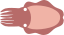

<script>

	function degtorad(dir)
	{
		(dir/180)*Math.PI;
	}

	function radtodeg(rad)
	{
		(rad*180)/Math.PI;
	}


	function lengthdir_x(len, dir)
	{
		return radtodeg(Math.cos(degtorad(dir))*len); 
	}

	function lengthdir_y(len, dir)
	{
		return radtodeg(Math.sin(degtorad(dir))*len); 
	}


	cuttlefish = document.getElementById("cuttlefish")

	cuttlefish.addEventListener("click", move);

	function move()
	{
		console.log(lengthdir_x(100, 45))
		cuttlefish.style.left = parseInt(cuttlefish.style.left)+lengthdir_x(100, 45);
		cuttlefish.style.top += lengthdir_y(100, 45);
	}	


</script>